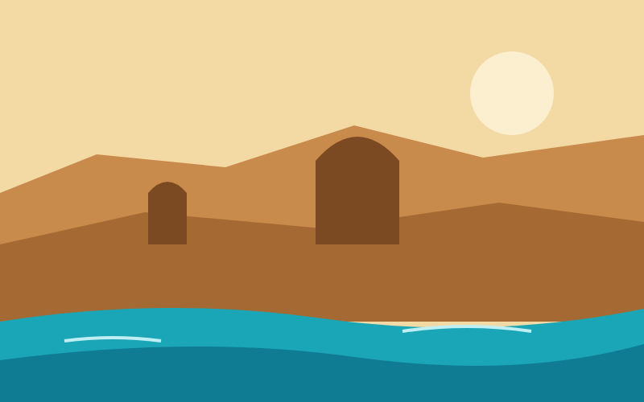
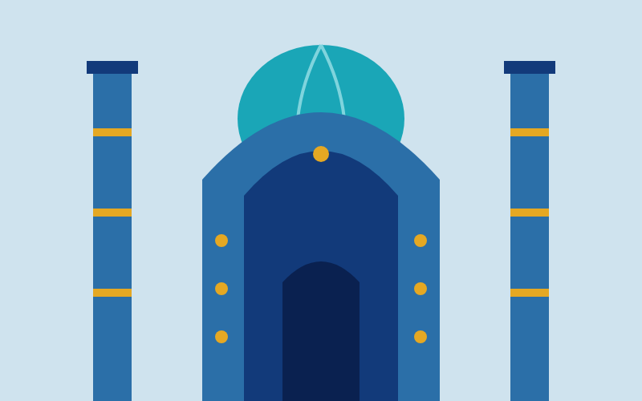
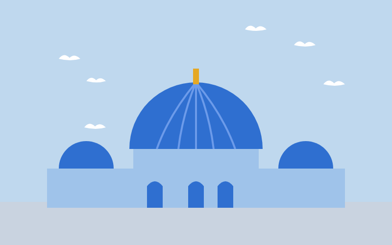
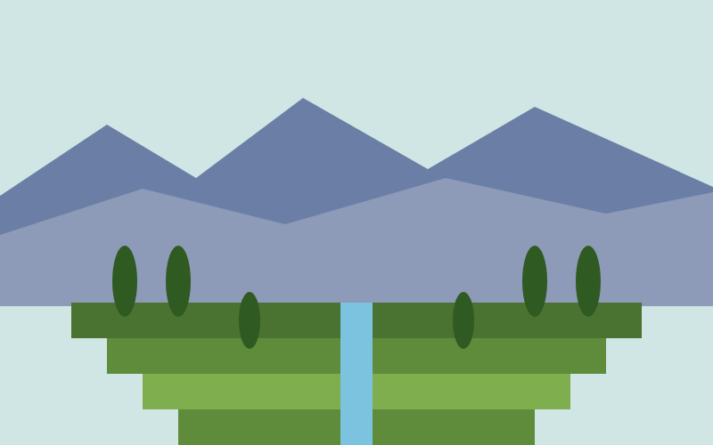
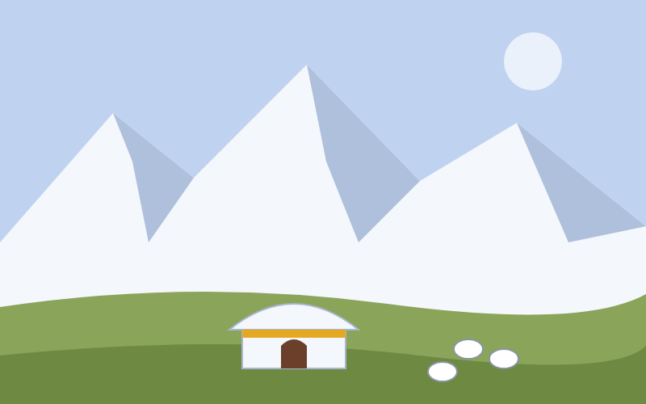
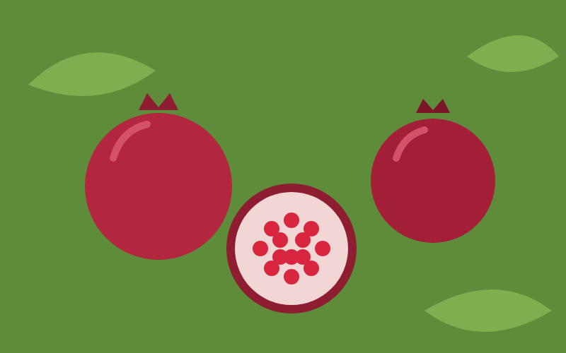
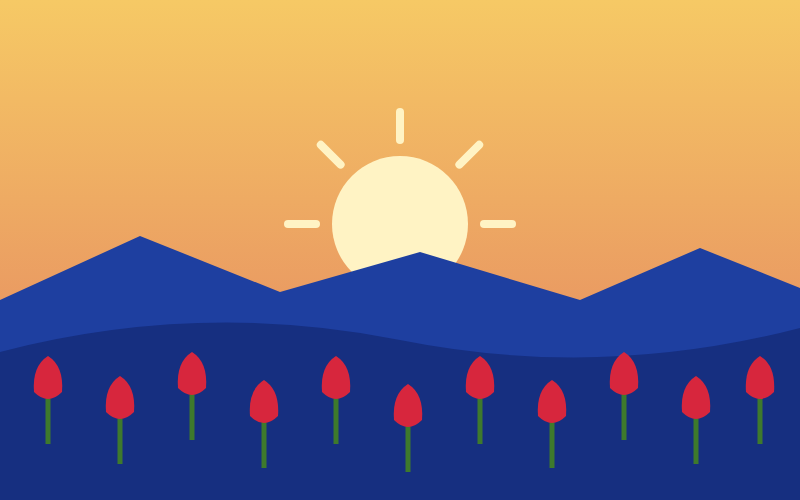
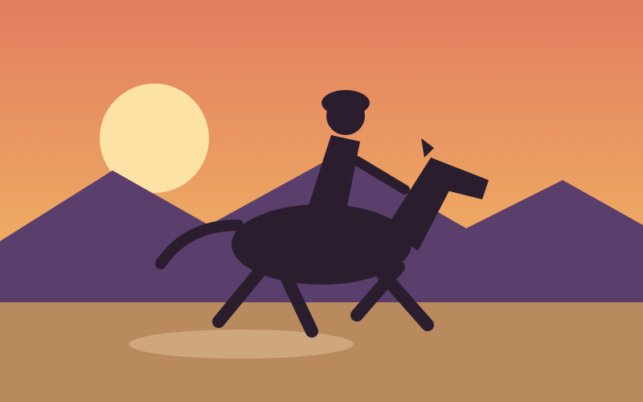
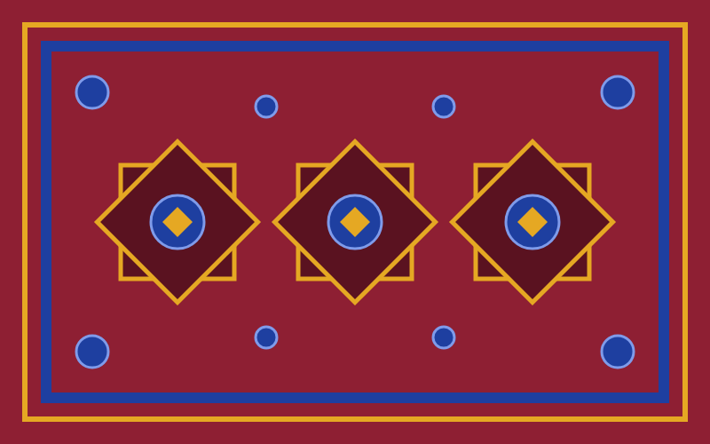

Start Exploring
Did you know? Many people think oil painting began in Europe in the 1400s. Researchers found drying oils, most likely walnut and poppy-seed oil, in murals in the caves of the Bamiyan Valley that date to the mid-600s AD. Before this, there was no clear evidence of oil paint being used before about the 1100s. The finding, announced in 2008, suggests Afghan painters were using oil paint centuries before European artists.

Place
Bamiyan and Band-e Amir
Bamiyan is a province in central Afghanistan, known for its stunning natural landscapes and rich cultural heritage. Band-e Amir National Park, located in Bamiyan, is famous for its series of six deep blue lakes separated by natural dams made of travertine.

Place
Herat
Herat is a city in western Afghanistan.A city of poets and painters in the 1400s. The Friday Mosque dates to the 1100s and is wrapped in blue tilework, and the old citadel still watches over the bazaars.

Place
Mazar-i-Sharif
Mazar-i-Sharif is a city in northern Afghanistan, known for its historical significance and beautiful architecture. The Blue Mosque, many locals believe, shelters the tomb of Ali. Flocks of white doves live in its courtyards, and the city fills with visitors at Nowruz.

Place
Kabul and the Gardens of Babur
Kabul sits in a mountain bowl. On a hillside above the Old City, terraced gardens from the 1500s hold the grave of Babur, the first Mughal emperor, beside long water channels.
Place
The Minaret of Jam
A brick tower 65 metres tall rises from a narrow river valley. Built around 1190, it is wrapped in geometric patterns and bands of turquoise lettering, and it is a UNESCO World Heritage site.

Place
The Wakhan Corridor
The Wakhan Corridor is a narrow strip of land in northeastern Afghanistan, bordering China and Pakistan. It is known for its dramatic mountain landscapes and remote beauty.
Taste
Kabuli Pulao
Kabuli Pulao is a traditional Afghan rice dish, often served with meat and vegetables. Long-grain rice cooked in stock with lamb, then piled with sweet carrot strips, raisins and pistachios. It is the dish that appears on the table for guests, weddings and holidays.
Taste
Mantu and Ashak
Mantu are steamed dumplings filled with spiced meat and onion. Ashak are filled with leeks. Both come under garlic yogurt, a savory sauce and a scatter of dried mint.

Taste
Pomegranates from Kandahar
Kandahar is famous for its large, deep red pomegranates, picked in autumn. They are eaten fresh, pressed into juice, and served on Shab-e Yalda, the longest night of the year.

Culture
Nowruz
Nowruz is the Persian New Year.The new year begins on the spring equinox. Families set out haft mewa, a bowl of seven dried fruits and nuts, and Mazar-i-Sharif holds the Red Flower Festival while tulips bloom.

Culture
Buzkashi
Buzkashi is a traditional Central Asian sport, played on horseback. It involves two teams competing to capture a goat or sheep and bring it to a designated goal.

Culture
Carpets and lapis
Weavers in the north knot carpets with repeating octagonal medallions called guls. In Badakhshan, miners have cut deep blue lapis lazuli from the same mountains for about 6,000 years.